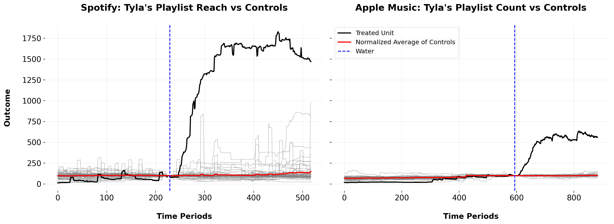
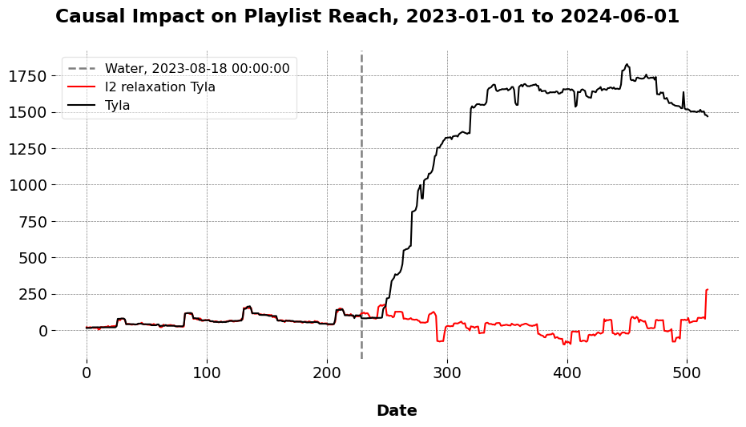
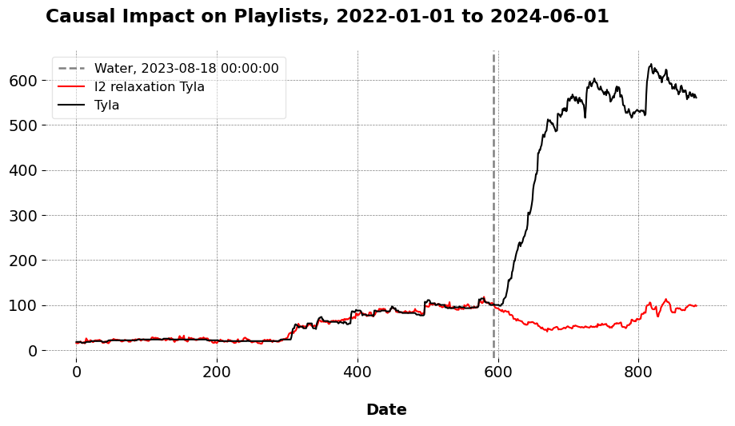

Artificial Counterfactuals in Dense Settings: the \(\ell_2\) relaxer
Causal Inference
Econometrics
Plenty of posts have been done in the last decade on the synthetic control method and related approaches. It is a flavor of artificial counterfactual estimator for the panel data setting. Folks from Microsoft, Databricks, Uber, Amazon, Netflix, Gainwell Technologies, and elsewhere have written about/covered it, detailing its implementation, use cases, and econometric theory.
Many (not all) of these cover the standard SCM, developed originally to study terrorism in the Basque Country and conduct comparative case studies more broadly. Standard SCM tends to favor, under certain technical conditions, a sparse set of control units being assigned weights. These weights aim to reconstruct the factor loadings/observed values of the treated unit, pre-intervention. Sparsity, or the true coefficient vector being mostly 0, has appealing properties; for example, a sparse vector allows us to interpret the synthetic control a lot easier, facilitating the estimation of leave-one-out placebos and other sensitivity checks. In some cases though, the sparsity notion is unfounded.
The the \(\ell_2\) panel data approach is an econometric methodology developed by Zhentao Shi and Yishu Wang. The \(\ell_2\)-PDA is a form of synthetic control estimation that accommodates sparse or dense data generation processes. A dense DGP is when the true vector of coefficients is mostly not zero. Sometimes, a sparse model is too simplistic, especially in settings where we have very many predictors. This is especially true when we have lots of multicollinearity among our predictors, which may be very plausible in settings with a lot of control units. The LASSO and the convex hull SCM (for different reasons and in different cases) generally struggle with this, whereas the Ridge or \(\ell_2\)-PDA accomodate multicollinearity as a feature. In this post, I demonstrate the method as implemented in my library mlsynth. The Python code for these results may be found here.
Note
This post goes over an extended empirical example. To see the simple and fast way to use this method, you can go to my Python documentation from my package mlsynth.
A Review of Synthetic Controls
Let \(\mathbb{R}\) denote the set of real numbers. Denote the natural numbers and unit interval respectively as \[
\mathbb{N} \coloneqq \{1, 2, 3, \dots\}, \quad \mathbb{I} \coloneqq \{ w \in \mathbb{R} : 0 \leq w \leq 1 \}.
\] Let a caligraphic letter, say \(\mathcal A\), denote a descrete set whose cardinality is \(A=|\mathcal{A}|\). The sup norm of a vector \(\mathbf{y} \in \mathbb{R}^N\) is defined as the maximum absolute value of its components, \(\|\mathbf{y}\|_\infty = \max_{j = 1, \ldots, N} |y_j|\). The floor function of a real number \(x \in \mathbb{R}\), denoted as \(\lfloor x \rfloor\), returns \(\lfloor x \rfloor = \max \{k \in \mathbb{N} : k \leq x\}\). Let \(t \in \mathbb{N}\) and \(i \in \mathbb{N}\), represent the indices for \(T\) time periods and \(N\) units. The pre-treatment period consists of consecutive time periods \(\mathcal{T}_1 = \{1, 2, \ldots, T_0\}\) (cardinality \(T_1\)), while the post-treatment period is given by \(\mathcal{T}_2 = \{T_0 + 1, \ldots, T\}\) (cardinality \(T_2\)). The treated unit is indexed by \(i = 1\), while the remaining set of units, \(\mathcal{N}_0 \coloneqq \{2, \ldots, N_0 + 1\}\) (cardinality \(N_0\)), forms the control group. Each outcome for all units is denoted by \(y_{it}\). Denote the outcome vector for the treated unit as \(\mathbf{y}_1 \coloneqq \begin{bmatrix} y_{11} & y_{12} & \cdots & y_{1T} \end{bmatrix}^\top \in \mathbb{R}^T\), where each entry corresponds to the outcome of the treated unit at time \(t\). The donor pool matrix, similarly, is defined as
\[
\mathbf{Y}_0 = \begin{bmatrix}
y_{21} & y_{22} & \cdots & y_{2T} \\
y_{31} & y_{32} & \cdots & y_{3T} \\
\vdots & \vdots & \ddots & \vdots \\
y_{(N_0+1)1} & y_{(N_0+1)2} & \cdots & y_{(N_0+1)T}
\end{bmatrix} \in \mathbb{R}^{N_0 \times T}.
\]
The key challenge of causal inference is that we only observe the factual/realized outcome, expressed as:
\[
y_{it} = y_{it}^1 d_{it} + \left(1 - d_{it}\right)y_{it}^0.
\] Outcomes in this framework are a function of treatment status, \(d_{it} \in \{0, 1\}\). While \(d_{it} = 1\), a unit is treated and while \(d_{it} = 0\) a unit is untreated. Thus, \(y_{it}^1\) is the potential outcome under treatment, \(y_{it}^0\) is the counterfactual (or potential) outcome under no treatment. The objective is to estimate the counterfactual outcomes \(y_{1t}^0\). SCMs and panel data approaches are weighting based estimators. In this setup, some weight vector \[
\mathbf{w} \coloneqq \begin{bmatrix} w_2 & w_3 & \cdots & w_{N_0+1} \end{bmatrix}^\top, \: \text{where } w_i \: \forall \: i \in \mathcal{N}_0.
\] is assigned across the \(N_0\) control units to approximate the treated unit’s pre-intervention outcome. SCM solves for \(\mathbf{w}\) via the optimization:
\[
\underset{\mathbf{w} \in \mathbb{I}^{N_0}}{\operatorname*{argmin}} \lVert \mathbf{y}_1 - \mathbf{w}^\top \mathbf{Y}_0 \rVert_2^2, \: \forall \: t \in \mathcal{T}_{1}, \: \text{subject to } \lVert \mathbf{w} \rVert_1 = 1.
\]
Here, \(\mathbf{w}^\top \mathbf{Y}_0\) represents the dot product of predictions, also known as a weighted average. The constraint of the convex hull disallows extrapolation of any form. SCMs are predicated on good pretreatment fit, such that \(\mathbf{w}^\top \mathbf{Y}_0 \approx \mathbf{y}_1\). Speaking generally, the better pre-treatment fit we have over a long time series, the better the out-of-sample predictions will be for the synthetic control.
\(\ell_2\)-PDA
\(\ell_2\)-PDA estimates the model \(\mathbf{y}_1 = \boldsymbol{\alpha}+ \mathbf{Y}_0\mathbf{w}+\mathbf{\epsilon}\), where \(\boldsymbol{\alpha}\) is some unconstrained intercept we estimate after solving for the weights. The intercept is simply the average time-based difference between the treated unit and the control group (as with normal regression, it is what we would get if all our weights were 0). The main innovation with \(\ell_2\)-PDA is the way Zhentao and Yishu propose to estimate the weights, which I think is pretty ingenious. They essentially advocate to literally exploit the pre-treatment relationships between the treated unit and donor pool, and the relationships between the donors themselves. \(\ell_2\)-PDA, unlike standard SCM, allows for extrapolation outside the convex hull. Here is the optimization for \(\ell_2\)-PDA:
\[\begin{split} \begin{aligned} &\underset{\mathbf{w} \in \mathbb{R}^{N_0}}{\operatorname*{argmin}} \frac{1}{2} \|\mathbf{w}\|_2^{2}, \: \forall \: t \: \in \mathcal{T}_{1}, \: \text{subject to } \|\boldsymbol{\eta} - \mathbf{\Sigma} \mathbf{w}\|_\infty \leq \tau \end{aligned} \end{split}\]For our purposes, three terms matter. The first is eta, computed like \(\boldsymbol{\eta} \in \mathbb{R}^{N_0 \times 1}=\frac{1}{T_1} \mathbf{Y}_0^\top \mathbf{y}_1\), the second is Sigma, computed like \(\boldsymbol{\Sigma}\in \mathbb{R}^{N_0 \times N_0} = \frac{1}{T_1} \mathbf{Y}_0^\top \mathbf{Y}_0\), and the final one is tau, \(\tau\). \(\boldsymbol{\eta}\) simply is a projection which measures the relation between treated unit and each of the control units over the pre-treatment period. The greater the absolute value of the number, the more/less similar the donor is to the treated unit. \(\boldsymbol{\Sigma}\) is what we call a Gram matrix. This term captures how similar the control units are to each other over the pre-treatment period. The optimization seeks to use the donor-to-donor relationships to reconstruct the values of the treated unit in the pre-intervention period. While \(\ell_2\)-PDA extrapolates, the extrapolation bias is bounded by the infinity norm (or, the maximum absolute value) of the difference between these two constructs I just discussed. Effectively, we are bounding the worst-case error to be no greater than some nonnegative constant. This constant is \(\tau\), and I discuss how I tune it in the next section.
Selecting \(\tau\)
Critical to \(\ell_2\)-PDA is the selection of tau. The reason for this is because while \(\tau \to 0\), the estimator converges to OLS, which we know will overfit to the pre-intervention data in most cases unless the data are exactly low-rank and fully observed. Too high a value of \(\tau\) results in drastic underfitting (trust me) of the pre-treatment data. The waymlsynth tunes tau is by cross-validation over the pre-treatment period. mlsynth invokes a log-space over the interval \(\tau \in \left[ 10^{-4}, \tau_{\text{init}} \right]\), where \(\tau_{\text{init}} = \|\boldsymbol{\eta}\|_\infty\). These correspond to the values of tau we supply. We first create a training and validation period, \(\mathcal{T}_1 = \mathcal{T}_1^{\text{train}} \cup \mathcal{T}_1^{\text{val}}, \quad
\mathcal{T}_1^{\text{train}} \cap \mathcal{T}_1^{\text{val}} = \emptyset.\) Denote the training series as \(\mathcal{T}_1^{\text{train}} = \{1, 2, \ldots, k\}\). Denote the validation series as \(\mathcal{T}_1^{\text{val}} = \{k+1, \ldots, T_0\}\), where \(k = \left\lfloor \frac{T_1}{2} \right\rfloor\). We then estimate the model for the training period, and compute our predictions from \(\{k+1, \ldots, T_0\}\). The tau we select is
\[\begin{aligned}
\tau^{\ast} = \operatorname*{argmin}_{\tau} \left( \frac{1}{|\mathcal{T}_1^{\text{val}}|} \| \mathbf{y}^{\ell_2} - \mathbf{y}_1 \|_2^2 \right),
\end{aligned}\]
or the one that minimizes the validation Root Mean Squared Error. The performance is pretty close to what Zhentao and Yishu do for their empirical example (see the code at the documentation). In the original paper, they do a 70-30 train test split over the pre-intervention period, where they take the first 70% of the pre-treatment data and supply some values of tau.
Okay hard part done. Let’s apply this to a real-life example, shall we?
Implementing \(\ell_2\)-PDA in mlsynth.
In order to get these results, you need Python (3.9 or greater) and mlsynth, which you may install from the Github repo.
pip install -U git+https://github.com/jgreathouse9/mlsynth.gitI taught Policy Data Analysis last semester at Georgia State. It was an undergrad course, but I still wanted to cover a little bit of causal inference, not because they will all go on to be grad students or policy researchers, but because the causal mindset is such an important part of how we think about and interact with the world. We managed to get through Difference-in-Differences, after we covered regression and basic stats. The very final topic we covered on the very last day of class was SCM. I prepared for class as I usually do, by playing music. The lyics were in Zulu, so I did not expect anybody who was not South African or a fan of Tyla to know the song, which they did not when I asked them. I then played Tyla’s song “Water”, the one that went viral in 2023, which everybody knew about when I asked.
I used this to transition into the lecture for the day. “Oftentimes,” I began, “we are concerned about the impact of specific events or interventions. As we’ve discussed, the DID method does this on a parallel trends assumption, or that absent the intevention, the trends of the treated group would, on average, move the same as the control group. But what do we do if this breaks down? What if we cannot get parallel trends to hold, for some reason? All semester, we’ve discussed academic examples, but I want to show you how this may look in a semi-real life setting. So the causal question we wish to answer here is”How would Tyla’s musical success have looked absent her going viral?” Maybe she would’ve made it big anyways, but how can we tell?” To walk them through this (using standard SCM), I used a dataset I scraped together. The daily data come from Songstats, a platform which attempts to keep data on Spotify and Apple (and lots of other sources) music/interaction trends. For example, here is Tyla’s Apple performance and the same for Spotify.
Plotting Our Data
Note
These Spotify and Apple data are freely available from my Github and can be viewed at a dashboard on Streamlit. They were scraped together using Python- the code for this scrape is private though. Someday, I may do a blog post employing a simple example of how I scraped it together, since public policy scholars can take advantage of scraping for their own purposes.
Before we get into the fancy estimation though, let’s just plot our data. For Spotify, the outcome metric of interest is “Playlist Reach” which Songstats defines as
The combined follower number of all Spotify playlists with 200+ followers your music is currently on.
I keep the data from Janaury 1 2023 to June 1 2024. There are 59 donors in the Spotify data, after we drop artists with unbalanced panel/missing data. For Apple, our outcome metric is “Playlists”, which Songstats defines as
The total number of distinct playlists your music has ever been on.
These data are collected from January 1 of 2022 to June 1 2024. Also, not all artists had complete data, so I kept only the artist who were fully observed over the course of the time series. This means there are 24 donors for Apple, yet this could easily change assuming I began the training period with the same time point as the Spotify data.
I normalized all the metrics to 100 at August 17, 2023, a few days before the treatment occured (Tyla performing in Kigali, Rwanda). Zhentao and Yishu recommend mean-standardization and then backing out the coefficients in the paper, but I haven’t programmed this for the \(\ell_2\) PDA just yet. Either way, I think it helps us to see what’s going on in better detail when we normalize the outcome trends as we see here, since now we’re practically comparing everybody in terms of relative trends. The plot says that Tyla generally had less relative popularity compared to the donors for the majority of the time seies pre treatment. We can see both her metrics balloon in the post-intervention period. We can also see quite clearly that parallel trends with respect to the donor pool likely does not hold; the trend of the average of controls is quite flat relatve to Tyla’s.
Songstats Spotify
I begin with the Spotify data. When we estimate \(\ell_2\)-PDA, comparing Tyla to her 59 controls, we get the following plot (note the red line is the counterfactual Tyla, or how her Playlist Reach would look absent her going viral) :

| | Metric | Value |
|---:|:--------------------|:---------------------------------------------------------------|
| 0 | ATT | 1325.899 |
| 1 | Standard Error | 76.60413219846333 |
| 2 | t-stat | 294.2436961703765 |
| 3 | Confidence Interval | (np.float64(1175.124052562776), np.float64(1476.673947437224)) |
| 4 | RMSE (T0) | 5.228 |
| 5 | R-Squared | 0.977 |Songstats Apple
Here is the same plot with the Apple data, where the outcome is Playlist Count:

| | Metric | Value |
|---:|:--------------------|:----------------------------------------------------------------|
| 0 | ATT | 412.533 |
| 1 | Standard Error | 22.41864875192298 |
| 2 | t-stat | 312.8226450043493 |
| 3 | Confidence Interval | (np.float64(368.40782698155834), np.float64(456.6581730184417)) |
| 4 | RMSE (T0) | 4.343 |
| 5 | R-Squared | 0.982 |This is unsurprising, and the practical results speak for themselves. Going viral clearly contributed a lot to Tyla’s success across both platforms, as the estimated counterfactuals spell out very plainly that her reach would be a lot flatter compared to what it in fact was/is. This method can also be used with multiple treated units, as we see in the paper, but I haven’t written this for mlsynth just yet.
Caveats
There are a few caveats to this, though:
- For one, these aren’t raw Spotify or Apple data, so there’s certainly measurement error in these metrics. For some reason, Songstats aggregates their data funny, only having, for example, Playlist Reach data for Rihanna going back to 2023, which is unusual given how popular an artist Rihanna is. Presumably, there’s plenty of noise and corruption in these metrics, so it would be cool to see how this model would play with real Spotify data (or other streaming metric quasi-experiments).
- Secondly, the donor pool is kind of small. Songstats’ latent API that I used to collect these metrics isn’t really built to grab many artists en masse; I’m sure it’s possible with a little Selenium work to get data on a substantial number of artists (all of it rests on collecting the unique artist ID’s, for example Tyla’s is: 7ln14gwj), but I was much too lazy to do that. So in theory, it would be possible to add many more artists to this dataset to see how the estimator behaves when there are 4 or 500 artists to work with.
Either way, this is how to use \(\ell_2\)-PDA to estimate causal impacts. Check our Zhentao and Yishu’s paper for the technical econometric theory and justification. And, you know where to find me should you have questions.
Data Science for Policy Analysts: A Simple Introduction to Web Scraping
Web Scraping
Python
On Clustering for Synthetic Controls
Causal Inference
Machine Learning
Why Data Generating Processes Matter for Causal Infernece
Econometric Theory
Econometrics
Causal Inference
Applying Forward DID to Construction and Tourism Policy
Causal Inference
Machine Learning
Econometrics
Causal Inference Runs the World: Actionable Insights, Econometrics Style
Econometrics
Causal Inference
Data Science
No matching items